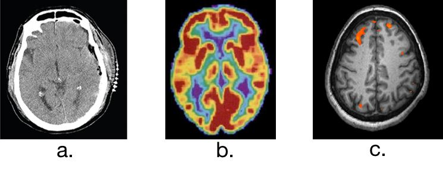
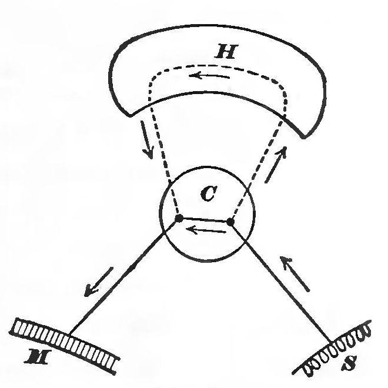
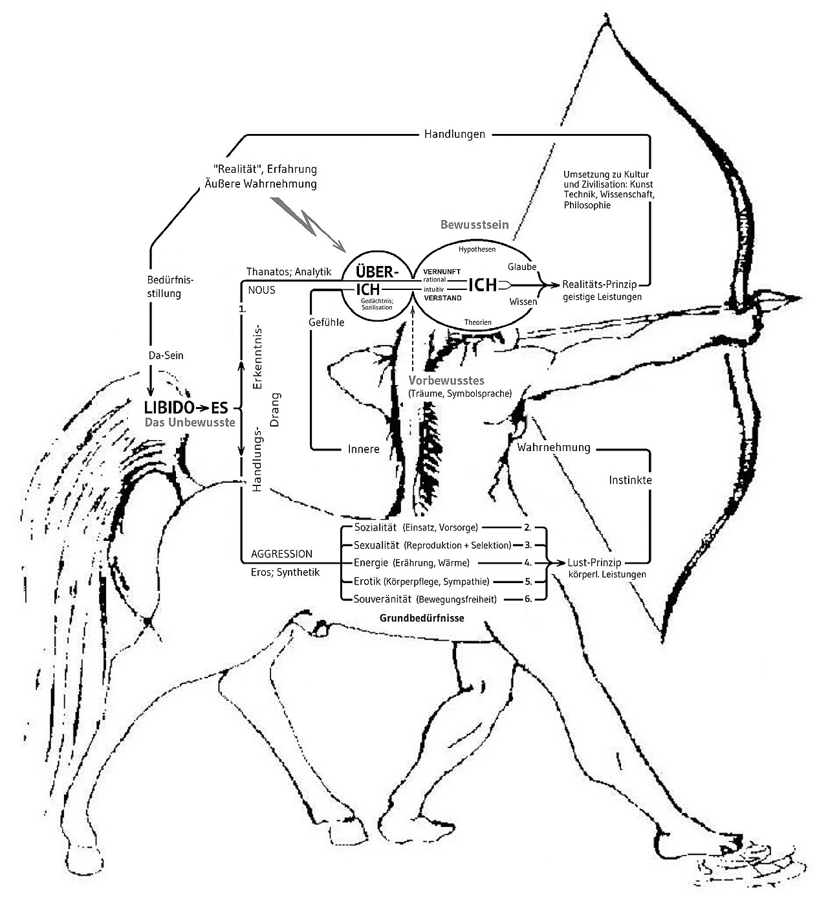

What Is Psychology?
Almost everyone has a theory of human behavior — why a friend snapped, why an ad worked, why we keep the resolution or break it. Psychology is what happens when those hunches are put to a fair test. It is the scientific study of mind and behavior: not a collection of opinions about people, but a set of methods for finding out which claims about people actually hold up. This chapter defines that science, tells the short story of how it broke away from philosophy, lays out the handful of lenses psychologists use to explain the same behavior in different ways, and shows what psychologists really do for a living — and why a little of their skepticism is worth carrying into everyday life.
By the end of this chapter you can
- Define psychology and explain what makes it a science rather than opinion.
- State psychology's four goals — describe, explain, predict, change — and give an example of each.
- Distinguish scientific psychology from pop-psychology and “common sense.”
- Trace the field's origins: Wundt and structuralism, James and functionalism, and the shift toward a science of behavior and mind.
- Compare the major perspectives — psychodynamic, behavioral, cognitive, humanistic, biological, evolutionary, and sociocultural.
- Describe the main subfields and contrast clinical, research, and applied work — and a psychologist from a psychiatrist.
- Use critical thinking to evaluate a psychological claim, including telling correlation from causation and anecdote from evidence.
Section 1Psychology as a science

A definition worth taking apart
Psychology is the scientific study of mind and behavior. Every word in that phrase is doing work. Behavior is anything an organism does that can be observed — a facial expression, a reaction time, words on a survey, a rat pressing a lever. Mind refers to the internal processes we infer from behavior but cannot watch directly — thoughts, memories, feelings, motives. And scientific is the word that separates psychology from every barroom theory of human nature: psychologists do not simply assert what people are like, they gather empirical evidence — observations collected systematically — and let that evidence decide.
Being empirical is what makes psychology a science even though its subject is invisible. You cannot see a memory, but you can measure how many words a person recalls; you cannot see anxiety, but you can time how long someone avoids a feared object and record their heart rate. By operationalizing hidden processes as measurable behaviors, psychology brings the scientific method — observe, form a hypothesis, test it, revise — to bear on questions philosophers had only argued about for centuries.
The four goals
Psychological science pursues four goals, each a step more demanding than the last. To describe is to say what happens — carefully, without distortion. To explain is to say why it happens — to find the causes. To predict is to say when it will happen again, and under what conditions. To change (sometimes called control or influence) is to use that knowledge to improve things — to reduce a phobia, raise a test score, design a safer cockpit. Description without explanation is mere cataloguing; explanation that cannot predict is just a story; and prediction earns its keep when it lets us change outcomes for the better.
| Goal | Question it answers | Everyday example |
|---|---|---|
| Describe | What is happening? | Teens who sleep less report more low mood |
| Explain | Why is it happening? | Sleep loss disrupts emotion-regulating brain circuits |
| Predict | When will it recur? | Students in early-start schools will report more mood problems |
| Change | How can we improve it? | Later start times reduce reported mood problems |
Why “common sense” is not enough
People often protest that psychology just proves the obvious. The trouble is that “the obvious” is a coin with two heads. Common sense says both that birds of a feather flock together and that opposites attract; that absence makes the heart grow fonder and that out of sight, out of mind. Folk wisdom has a proverb for every outcome, which means it predicts nothing in advance — it only sounds wise after we know the answer, a trap called hindsight bias. Worse, popular “pop-psychology” is full of confident claims that are simply false: that we use only ten percent of our brains, that opposites make the best couples, that venting anger drains it away, that learners have fixed “styles” that must be matched. Each of these has been tested; each has failed. The point of a science of mind is not to confirm hunches but to check them.
- Psychology is the scientific study of mind (inferred internal processes) and behavior (observable action).
- What makes it a science is its reliance on empirical evidence and the scientific method, not on opinion or intuition.
- Its four goals are to describe, explain, predict, and change behavior.
- Because “common sense” explains any outcome after the fact (hindsight bias), it is no substitute for testing claims in advance.
Section 2A short history

1879: psychology leaves philosophy
Questions about the mind are ancient — Aristotle, Descartes, and Locke all had answers — but for most of history they belonged to philosophy, settled by argument rather than experiment. Psychology as a separate science has a birthday: 1879, when Wilhelm Wundt opened the first laboratory devoted to studying the mind experimentally, in Leipzig, Germany. Wundt's method was introspection — training people to report the raw contents of their own conscious experience under carefully controlled conditions, for instance the exact sensations produced by a ticking metronome. Crude as introspection now seems, the radical move was the setting: a laboratory, with stimuli, measurements, and repetition. Wundt is remembered as the father of experimental psychology.
Two founding schools: structuralism and functionalism
Wundt's student Edward Titchener carried these ideas to the United States and built them into structuralism, the first school of thought. Structuralists wanted to break consciousness into its basic elements — sensations, images, feelings — the way a chemist breaks water into hydrogen and oxygen. The project relied entirely on introspection, and it faltered: trained observers looking inward at the same stimulus often reported different things, and there was no way to referee the disagreement.
A rival grew up in America around William James, whose 1890 Principles of Psychology defined the field for a generation. Deeply influenced by Darwin, James asked not what consciousness is made of but what it is for — the school called functionalism. Why do we have memory, emotion, habit? Because they function: they help an organism adapt to its environment and survive. Functionalism did not last as a formal school either, but its central question — what is this mental process good for? — runs straight through modern psychology and into the evolutionary perspective.
| School | Key figure(s) | Core question | Method / fate |
|---|---|---|---|
| Structuralism | Wundt, Titchener | What are the elements of consciousness? | Introspection; collapsed as unreliable |
| Functionalism | William James | What is consciousness for? | Absorbed into later psychology |
| Behaviorism | Watson, Pavlov, Skinner | What can we learn from observable behavior? | Dominated 1920s–1950s |
The turn to behavior — and back to the mind
By the 1910s many psychologists had lost patience with introspection's unreliability. John B. Watson argued that a real science should study only what can be seen and measured: behavior. This school, behaviorism, drew on Ivan Pavlov's discovery of classical conditioning in dogs and reached full force with B. F. Skinner, who showed how rewards and punishments shape what animals and people do. Behaviorism ruled psychology for decades and left behind powerful tools still used in therapy and education. But it treated the mind as a “black box” not worth opening — and by the 1950s and 1960s that felt like a cost. The cognitive revolution, spurred partly by the arrival of computers as a model for information processing, brought memory, attention, language, and thought back to the center of the science, this time studied with rigorous experiments rather than introspection.
- Wundt founded the first psychology laboratory (1879), using introspection under controlled conditions.
- Structuralism (Titchener) sought the elements of consciousness; functionalism (James) asked what mental processes are for.
- Behaviorism (Watson, Pavlov, Skinner) restricted psychology to observable behavior and dominated for decades.
- The cognitive revolution returned mind and thought to the science while keeping its empirical standards.
Section 3The major perspectives

One behavior, several lenses
Modern psychology is not organized around a single grand theory. Instead it uses a set of perspectives, each a distinctive angle on the same behavior. Ask why a student freezes before an exam and each perspective offers a different, partly-true answer: an unresolved fear of failure, a history of punished mistakes, a distorted train of catastrophic thoughts, a thwarted need to feel competent, a surge of stress hormones, an ancient threat-response, or the pressure of a culture that prizes grades. None is the whole story; together they are far more complete than any one alone. This is why psychologists speak of the biopsychosocial model — behavior arising from biological, psychological, and social causes at once.
The seven you should know
The psychodynamic perspective, founded by Sigmund Freud and revised by followers such as Carl Jung, Alfred Adler, and Erik Erikson, traces behavior to unconscious conflicts and early experience. The behavioral perspective, from Pavlov, Watson, and Skinner — and extended by Albert Bandura's work on learning by watching others — explains behavior through conditioning and reinforcement. The cognitive perspective studies the mental processes in between: how we perceive, remember, reason, and solve problems, with Jean Piaget's account of how children's thinking develops as a landmark. The humanistic perspective, associated with Carl Rogers and Abraham Maslow, emphasizes free will, personal growth, and the drive toward self-actualization.
Three more round out the set. The biological (neuroscience) perspective locates behavior in the brain, neurotransmitters, hormones, and genes — Hans Selye's work on the body's stress response is a classic example. The evolutionary perspective, descended from Darwin, asks how a trait or behavior might have aided survival and reproduction in our ancestral past. And the sociocultural perspective examines how other people and the surrounding culture shape us — the tradition behind Solomon Asch's conformity studies and Stanley Milgram's obedience experiments.
| Perspective | Core idea | Key figures | Sample question |
|---|---|---|---|
| Psychodynamic | Unconscious conflict & early experience drive behavior | Freud, Jung, Adler, Erikson | What childhood conflict fuels this fear? |
| Behavioral | Behavior is learned through conditioning & reinforcement | Pavlov, Watson, Skinner, Bandura | What rewards or punishments shaped this? |
| Cognitive | Mental processing shapes behavior | Piaget, Neisser | How is this person thinking about the threat? |
| Humanistic | People have free will & strive to grow | Rogers, Maslow | What unmet need blocks growth here? |
| Biological | Brain, genes, hormones underlie behavior | Selye | What is happening in the nervous system? |
| Evolutionary | Traits persist because they aided survival | Darwin (intellectual root) | How might this response have helped ancestors? |
| Sociocultural | Culture & social context shape behavior | Asch, Milgram | How do others and culture influence this? |
Running underneath all of them is psychology's oldest argument, the nature–nurture question: how much of who we are comes from inherited biology and how much from experience and environment? The modern answer is not “which one” but “how they interact” — genes and experience continuously shape each other, a give-and-take the biological and sociocultural perspectives study from opposite ends.
- Psychology explains behavior through several complementary perspectives, not one master theory.
- The seven core lenses are psychodynamic, behavioral, cognitive, humanistic, biological, evolutionary, and sociocultural.
- Each pairs with signature figures — Freud, Skinner/Bandura, Piaget, Rogers/Maslow, Selye, Darwin, Asch/Milgram.
- The nature–nurture debate is now understood as an interaction, not an either/or.
Section 4Subfields & careers

Three broad kinds of work
“Psychologist” is an umbrella over a surprisingly wide range of jobs, which sort roughly into three families. Clinical and counseling psychologists assess and treat psychological disorders and distress — the popular image of the field, though it is only part of it. Research psychologists (also called experimental or academic psychologists) run studies and teach, building the knowledge base itself. Applied psychologists take that knowledge into the world — workplaces, schools, courts, hospitals, teams, product design — to solve concrete problems. The same person may do more than one; a professor might research memory, teach, and consult for a company on training design.
A tour of the subfields
The research side alone contains a dozen specialties. Developmental psychologists study how we change across the lifespan — Piaget on children's reasoning, Mary Ainsworth on infant attachment, Erikson on stages of identity. Cognitive psychologists study memory, attention, and language; biological psychologists and neuroscientists study the brain behind them. Social psychologists study how people affect one another (Asch, Milgram); personality psychologists study stable individual differences. On the applied side, industrial-organizational (I/O) psychologists improve workplaces and hiring; school and educational psychologists support learning; health psychologists study how behavior and stress affect illness (building on Selye); forensic psychologists work at the intersection of psychology and the law; sports and human-factors psychologists optimize performance and the design of tools.
| Family | Example subfields | What they do |
|---|---|---|
| Clinical / counseling | Clinical, counseling, health psychology | Assess & treat disorders; support coping and wellbeing |
| Research / academic | Developmental, cognitive, social, biological, personality | Run studies, teach, generate new knowledge |
| Applied | Industrial-organizational, school, forensic, sports, human factors | Apply findings to work, learning, law, and design |
Psychologist versus psychiatrist
The two are constantly confused, and the difference matters. A clinical psychologist typically holds a doctoral degree (a Ph.D. or Psy.D.) and treats disorders mainly through assessment and psychotherapy — talk-based, behavioral, and cognitive treatments. A psychiatrist is a medical doctor (M.D. or D.O.) who completed medical school and a psychiatry residency and, as a physician, focuses on the biological side and can prescribe medication. In most settings the two collaborate: the psychiatrist manages medication while the psychologist provides therapy. (A counseling psychologist, a clinical social worker, and a licensed counselor round out the mental-health team at different training levels.)
- Psychology work sorts into clinical/counseling, research, and applied families — and clinical care is only one part.
- Research subfields include developmental, cognitive, social, biological, and personality; applied ones include I/O, school, health, forensic, and sports psychology.
- A psychologist usually holds a Ph.D./Psy.D. and treats mainly with therapy; a psychiatrist is an M.D. who can prescribe medication.
- Landmark figures span the subfields: Piaget and Ainsworth in development, Asch and Milgram in social, Selye in health.
Section 5Why psychology matters
A toolkit for thinking clearly
Even for people who never study psychology formally again, the discipline's most valuable export is a habit of mind: critical thinking, the disciplined evaluation of claims and evidence before accepting them. Psychology teaches it by necessity, because the mind is the one instrument that constantly fools its owner. We remember selectively, notice what confirms our beliefs (confirmation bias), see patterns in noise, and rewrite the past to fit the present. Knowing this does not make us immune, but it makes us cautious in the right places — and caution aimed at our own certainty is the beginning of wisdom.
Reading claims skeptically
Psychological claims are everywhere — in advertising, headlines, self-help, and social feeds — and most are not tested. A few questions defuse the majority of bad ones. First: is this a single story or actual data? A vivid anecdote (“it worked for my cousin”) is not evidence; a controlled study on many people is. Second, and most important: does correlation prove causation? Two things that rise and fall together need not cause each other — ice-cream sales and drowning both climb in summer, but neither causes the other; heat does. Third: has the finding replicated, or is it one flashy result? And fourth: does the claim have the trappings of science but none of its substance — pseudoscience like astrology, “detox” cures, or personality typing that can never be shown wrong?
| When you hear… | Ask… | Why it matters |
|---|---|---|
| “It worked for me!” | Is this an anecdote or data? | One case cannot rule out coincidence or placebo |
| “X is linked to Y” | Correlation or causation? | A third factor may cause both |
| “A new study shows…” | Has it replicated? | Single results are often flukes |
| “Science-backed!” | Can the claim be proven wrong? | Unfalsifiable claims are pseudoscience |
Better everyday decisions
The payoff is practical. Understanding reinforcement helps you build habits and drop bad ones. Understanding stress — Selye's ground — helps you protect your health. Understanding memory tells you why cramming fails and spaced practice works. Understanding conformity and obedience — Asch and Milgram — helps you recognize social pressure while you can still resist it. Psychology will not hand you a formula for life, but it will make you a sharper reader of the constant stream of claims about how humans think, feel, and behave — including the claims you make about yourself.
- Psychology's most portable skill is critical thinking — evaluating claims and evidence before believing them.
- Human cognition is prone to confirmation bias, hindsight bias, and pattern-seeing, which is exactly why disciplined method is needed.
- Evaluate claims by asking: anecdote or data? correlation or causation? replicated? falsifiable (not pseudoscience)?
- Applied wisely, the science improves real decisions about health, habits, learning, and resisting social pressure.
The chapter in one breath
- Psychology is the scientific study of mind and behavior; what makes it a science is empirical testing, not opinion.
- Its four goals are to describe, explain, predict, and change behavior, and it exists precisely because “common sense” explains everything only in hindsight.
- The field became a science with Wundt's 1879 lab; structuralism and functionalism gave way to behaviorism, then the cognitive revolution.
- Modern psychology uses seven complementary perspectives: psychodynamic, behavioral, cognitive, humanistic, biological, evolutionary, and sociocultural.
- The old nature–nurture debate is now understood as an ongoing interaction of genes and experience.
- Psychologists work in clinical/counseling, research, and applied roles across many subfields; a psychologist differs from a prescribing psychiatrist.
- Psychology's most portable gift is critical thinking — especially the rule that correlation is not causation.
ReferenceWords worth knowing
A quick reference for the terms in this chapter — skim it now, or circle back whenever a word trips you up.
- Applied psychology
- The use of psychological knowledge to solve practical problems in settings such as workplaces, schools, courts, and design.
- Behaviorism
- The school, led by Watson and Skinner, that restricts psychology to observable behavior and its conditioning.
- Biological perspective
- The lens that explains behavior through the brain, neurotransmitters, hormones, and genes; also called biopsychology or neuroscience.
- Clinical psychology
- The subfield that assesses and treats psychological disorders, usually through therapy and requiring a doctoral degree.
- Cognitive perspective
- The lens that studies mental processes — perception, memory, reasoning, language — as causes of behavior.
- Correlation
- A statistical link in which two variables change together; a correlation does not by itself prove that one causes the other.
- Critical thinking
- The disciplined evaluation of claims and evidence before accepting them.
- Empiricism
- The principle that knowledge should rest on evidence gathered through systematic observation and experiment.
- Evolutionary perspective
- The lens, descended from Darwin, that asks how a behavior might have aided survival and reproduction.
- Functionalism
- William James's school, which asked what mental processes are for — how they help an organism adapt.
- Humanistic perspective
- The lens, associated with Rogers and Maslow, emphasizing free will, personal growth, and self-actualization.
- Introspection
- Wundt's method of having trained observers report the contents of their own conscious experience.
- Nature–nurture question
- The long-standing issue of how much behavior is shaped by inherited biology versus experience — now seen as an interaction.
- Pseudoscience
- Claims that borrow the appearance of science but cannot be tested or shown to be wrong (e.g., astrology).
- Psychiatry
- The medical specialty, practiced by physicians (M.D./D.O.), that treats mental disorders and can prescribe medication.
- Psychodynamic perspective
- The lens, founded by Freud, that traces behavior to unconscious conflict and early experience.
- Psychology
- The scientific study of mind and behavior.
- Scientific method
- The cycle of observing, forming a testable hypothesis, gathering data, and revising in light of results.
- Sociocultural perspective
- The lens that examines how other people and the surrounding culture shape behavior.
- Structuralism
- The first school (Wundt, Titchener), which used introspection to break consciousness into basic elements.
- Theory
- An organized explanation of observations that generates testable predictions.